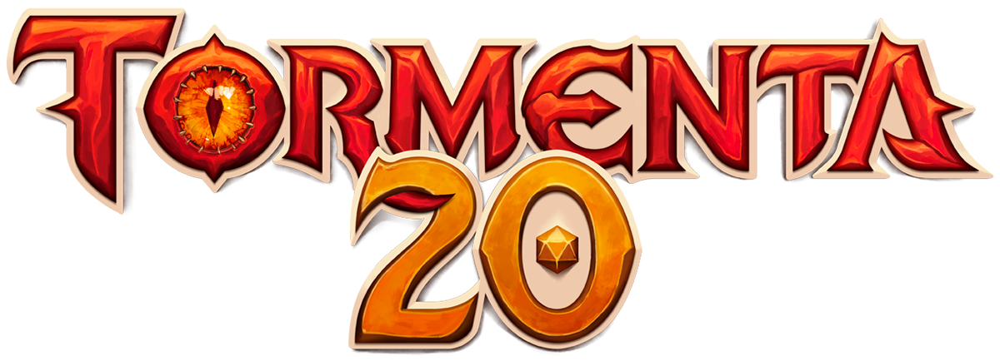
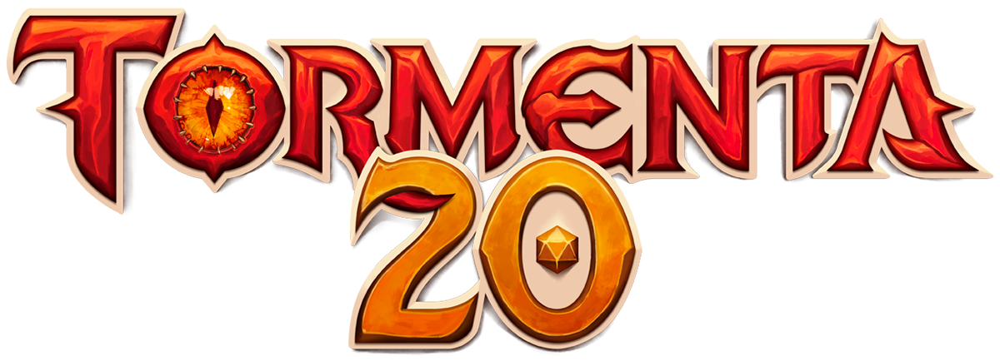

RPG's Clássicos
RPG's são jogos de interpretação, onde uma pessoa guia a história, o grupo, o mundo e um outro grupo de pessoas participa atuando e interpretando personagens dentro da história. Para que essas histórias seja guiadas e tenham regras, existem os chamados Sistemas de RPG, como o clássico Dungeons & Dragons (D&D) que tem um livro de regras baseado em um mundo medieval, Call of Cthulhu(CoC), que é um sistema baseado no mundo de H.P Lovecraft mas ainda mantém os pés no chão, como parte grande trio dos RPG's clássicos, ainda temos o Tormenta20 que é medieval como o D&D, porém com regras, inimigos e funcionalidades diferentes.
 

Sistema de RPG de Jujutsu Kaisen
Um sistema de RPG feito pela talentosa escritora digital Setsugiri, que foi criado tendo sua base em sistemas clássicos como o D&D e Tormenta20, que teve seu livro digital postado em 2023, já teve uma atualização grande em 2024, com a versão 2.0, que contendo 400 páginas de conteúdo. O sistema feito por Setsugiri baseado no universo de Jujutsu Kaisen e D&D com Tormenta20, se chama Feiticeiros & Maldições.
O sistema Feiticeiros e Maldições tem um servidor do discord, onde podemos encontrar todos os conteúdos dele, como o link para adquirir o livro gratuitamente, tanto a primeira quanto a segunda edição, as fichas para criar seus personagens, guias para os mestres de RPG poderem guiar suas histórias corretamente.
Esse Sistema permite o jogador criar suas próprias habilidades, só usando um guia básico do livro e muita criatividade, ou usar as técnicas já existentes do livro como a Besta Mística Ámbar do feiticeiro do passado Hajime Kashimo, ou o tão conhecido Ilimitado do feiticeiro mais poderoso da era moderna, Satoro Gojo, ou até mesmo a técnica Santuário, do Rei das Maldições Ryomen Sukuna.
A criação de personagem se baseia em uma distribuição de pontos nos seguintes atributos, Força, Deestreza, Constituição, Inteligência, Sabedoria e Carisma. Cada atributo tem seu valor e sua utilidade, depende exclusivamente do conceito de personagem que o jogador quer fazer, podendo ser um personagem super forte que só anda pra frente batendo em tudo que se mova, um feiticeiro super inteligente que tem uma técnica super poderosa e luta com estratégia, ou um suporte que fica atrás ajudando a equipe com cura ou outras habilidades úteis para o grupo no geral.